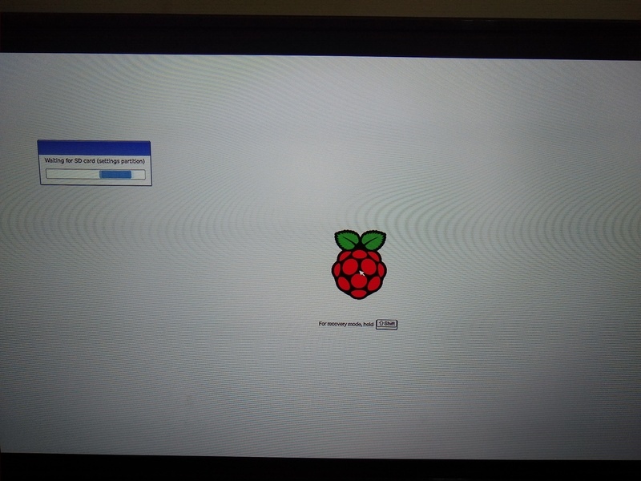
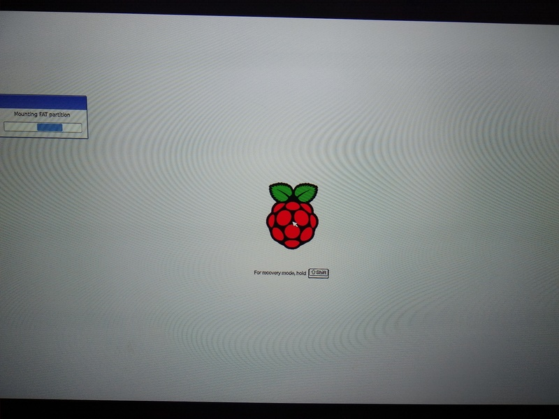
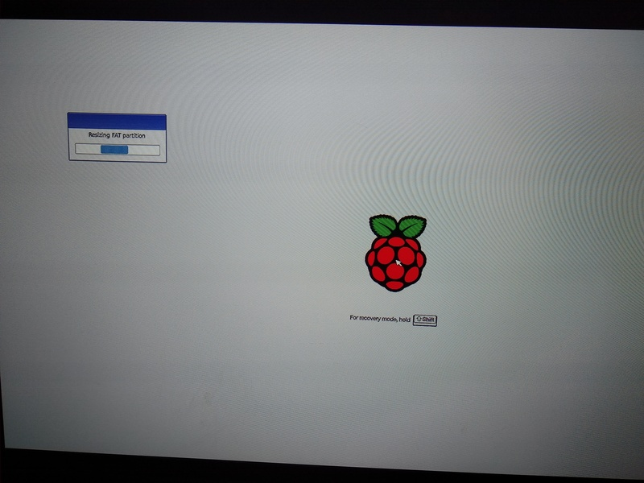
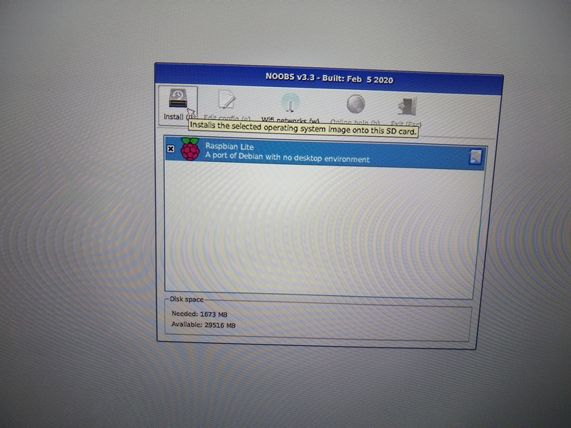
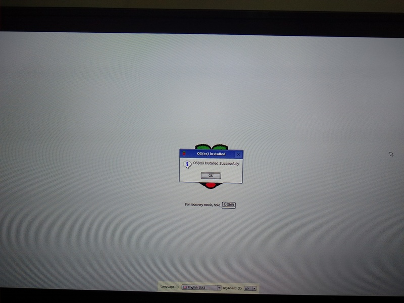

Contexto
Hoy me hice un tiempo para desempolvar la raspberry pi 3B que tenía guardada y actualizar el sistema a debian estable (buster) con mate para que mi hijo empiece a aprender a usar la computadora.
Si bien NOOBS permite descargar imagenes por red, al parecer tuvo problemas para utilizar la red wifi de casa, por lo que quise aprovechar la oportunidad para actualizar la sdcard ([ya había instalado algún otro sistema previamente][!A! post webos]) y la imagen que trae por defecto.
Advertencia: Leer lo siguiente dos veces, la primera para entender que se hizo y la segunda para hacerlo efectivamente.
Obteniendo NOOBS
Lo primero a destacar es que al parecer NOOBS ya está quedando algo viejo... De la página de descargas del sitio de raspberry se indica que la forma preferida ahora es utilizando Raspberry Pi Imager.
Debido a que no me gusta instalar cosas en mi PC (aunque a raspberry.org le podemos tener algo de confianza) y que me gusta afeitar yaks vamos por el camino de NOOBS.
Lo primero es descargar la versión lite, que está pesando alrededor de los 38MB, en lugar de la versión común que está en los 2.3GB. Por supuesto que esta última ya trae Raspbian y LibreELEC, de ahí que se explique el peso del archivo. Ya que nosotros queremos tener la libertad de agregar otra imagen confirmamos que la versión lite es la adecuada.
Empezamos por crear el directorio de trabajo, ir a este y empezar a descargar:
$ mkdir -p ~/workspace/raspberry
$ cd ~/workspace/raspberry
$ wget --content-disposition 'https://downloads.raspberrypi.org/NOOBS_lite_latest'
Y bueno... hasta ahí se llega con la ayuda dada en la página web. Pero ya que somos persistentes vamos a buscar un poco más de documentación. Lo bueno del software libre es que siempre podemos ir... al código :)
De ahí que en la sección Setup del archivo README encontramos un poco más de detalles respecto a que hacer. Resumiendo los pasos a seguir son:
-
Formatear la sdcard como FAT32 con una partición llamada
RECOVERY:-
Obtener dispositivo en que se encuentra la sdcard:
$ lsblk -d NAME MAJ:MIN RM SIZE RO TYPE MOUNTPOINT ... sdb 8:16 1 29.3G 0 diskComo es esperable (ya que tengo solo un disco duro en la laptop y ningún otro dispositivo de almacenamiento usb) la partición de la sdcard es
/dev/sdb -
Formatear la sdcard con una sola partición FAT32 de nombre
RECOVERY. Para ello se utilizará el programaparted:$ sudo parted /dev/sdb mktable msdos $ sudo parted /dev/sdb mkpart primary fat32 0% 100% $ sudo mkfs.vfat -n RECOVERY /dev/sdb1
-
-
Extraer los archivos de NOOBS a la partición anterior:
-
Montar la partición creada:
$ mkdir ~/workspace/raspberry/RECOVERY $ sudo mount -o umask=000 /dev/sdb1 ~/workspace/raspberry/RECOVERY -
Extraer los archivos
$ unzip -d ~/workspace/raspberry/RECOVERY/ NOOBS_lite_v3_3.zip
-
Realizamos los pasos anteriores ya que al final de la sección Setup se indica que en el primer boot, la partición fat RECOVERY será redimensionada a un mínimo, por lo que podemos crear una sola partición en la tarjeta sdcard que la ocupe completamente sin preocuparnos de conocer previamente el tamaño que utilizará la imagen que deseamos precargar.
Lo que nos falta: precargar las imagenes en la sdcard.
Obteniendo imagen(es)
Y bueno..., ahora empieza lo divertido.
De las imagenes que aparecen disponibles en el sitio de raspberry, nos interesa Raspbian Buster Lite - Minimal image based on Debian Buster, ya que se desea una imagen mínima para luego poder customizar instalandole mate.
La documentación de NOOBS que indica como agregar una imagen se encuentra en la sección How to create a custom OS version, nuevamente en el archivo README en github.
Allí más que dar detalles de como crear una imagen el enfoque es descargar una imagen e ir modificandola. Desconforme con las instrucciones, ya que no deseo generar una imagen sinó utilizar alguna de las ya disponibles para descargar si se utilizara NOOBS mediante la red, opto por buscar en el código fuente desde donde se descarga la información utilizada al momento de presentar las imagenes disponibles:
$ git clone --depth=1 git@github.com:raspberrypi/noobs.git
$ grep -r http noobs/recovery/ noobs/sdcontent/
...
noobs/recovery/config.h:#define DEFAULT_REPO_SERVER "http://downloads.raspberrypi.org/os_list_v3.json"
...
En los pasos anteriores se buscaron url's en el código ya que supuse (por suerte correctamente) que la lista debía obtenerse de un servidor.
Descargando el archivo anterior y luego de inspeccionar su contenido pasamos a utilizando el comando jq para acceder a la información que contiene de forma ordenada, con la idea de realizar un script para descargar la información:
$ wget -P /tmp/ "http://downloads.raspberrypi.org/os_list_v3.json"
$ jq '.os_list[].os_name' /tmp/os_list_v3.json | grep -i raspbian
"Raspbian Full"
"Raspbian Lite"
"Raspbian"
Como se esperaba, está disponible la imagen Raspbian Lite para descargar, por lo que ahora pasamos a descargarla en el directorio os de noobs.
Para obtener los distintos archivos a descargar se creará un script al que le pasaremos por parámetro la imagen a descargar. Para crearlo comencemos primero probando unos fragmentos de código:
-
Descarga del archivo (por supuesto con wget):
DEFAULT_REPO_SERVER="http://downloads.raspberrypi.org/os_list_v3.json" wget -O os_list.json "$DEFAULT_REPO_SERVER" -
Listar las versiones disponibles:
jq '.os_list[].os_name' os_list.json | LC_ALL=C sort -
Determinar si está disponible la imagen buscada. La variable
OS_NAMEcontiene el nombre de la imagen:FILTER='.os_list[] | select(.os_name == "'"$OS_NAME"'")' set +e jq -e "$FILTER" os_list.json > /dev/null status=$? set -eEn el fragmento anterior, un valor de
statusen0indica que se encontró el nombre. Por otro lado, un valor de4indica que este no fué encontrado. -
Escapar el nombre de la imagen (reemplazando espacios) para crear directorio:
OS_DIR="$(echo "$OS_NAME" | tr ' ' _)"Advertencia: si el directorio de una imagen (custom OS version) tiene espacios ocurrirá un error al momento de descomprimir la imagen en NOOBS.
-
Por último, para obtener un campo cualquiera del diccionario correspondiente a la imagen definimos una función:
value() { jq -r "$FILTER | .$1" os_list.json }Como ejemplo de uso, para obtener la descripción de la imagen se utiliza:
value description
Ahora que es posible manipular sin problemas la información del archivo json con la información de las imagenes disponibles se debe saber que archivos descargar.
Para ello se utilizará la información contenida en la sección How to create a custom OS version del README de NOOBS y la lista de archivos de que se encuentran actualmente en la sdcard:
Aquí es donde cobra relevancia el aviso de leer primero y hacer la segunda vez
$ sudo mkdir /media/jmpc/RECOVERY
$ sudo mount /dev/sdb1 /media/jmpc/RECOVERY
$ find /media/jmpc/RECOVERY/os -printf '%P\n' | LC_ALL=C sort
Raspbian
Raspbian/Raspbian.png
Raspbian/boot.tar.xz
Raspbian/os.json
Raspbian/partition_setup.sh
Raspbian/partitions.json
Raspbian/release_notes.txt
Raspbian/root.tar.xz
Raspbian/slides_vga
Raspbian/slides_vga/A.png
Raspbian/slides_vga/B.png
Raspbian/slides_vga/C.png
Raspbian/slides_vga/D.png
Raspbian/slides_vga/E.png
Raspbian/slides_vga/F.png
Raspbian/slides_vga/G.png
$ sudo umount /dev/sdb1
Los archivos a descargar se encuentran en las siguientes entradas del json:
- icon (Raspbian.png)
- marketing_info (tar que contiene el directorio
slides_vga) - os_info (os.json)
- partitions_info (partitions.json)
- partition_setup (partition_setup.sh)
- tarballs (boot.tar.xz y root.tar.xz; podría haber más)
Con toda la información anterior se crea el script get-os.sh que nos ayudará a realizar la descarga de archivos.
Suponiendo que el script fué descargado en el directorio ~/workspace/raspberry
hacer:
$ cd ~/workspace/raspberry/RECOVERY/os
$ ~/workspace/raspberry/get-os.sh 'Raspbian Lite'
Por último desmontamos la sdcard:
$ cd ~/workspace/raspberry/
$ sync
$ sync
$ sudo umount ~/workspace/raspberry/RECOVERY
Utilizando la sdcard en una raspberry pi 3 vemos que la instalación de NOOBS y el agregado del custom OS funciona sin problemas:
-
Iniciando NOOBS 
-
Montando la partición
RECOVERY -
Haciendo resize de la partición
RECOVERY -
Selección de los sistemas operativos disponibles en la sdcard 
-
Instalación exitosa! 